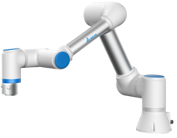

DIAEAP設備自動化控制系統
DIAEAP 設備自動化控制系統 (Equipment Automation Program) 支援多設備機台的訂製生產控制， 整合設備多元規格與通訊，實時掌握設備狀態，減少人為的量產疏失。
針對生產操作的需求，可與製造執行系統 (MES)、統計製程管制系統 (SPC)、配方管理系統 (RMS) 等全面整合， 提高設備的使用效能，協助邁向自動化與智能化的標準。優化管理、節省人力，並有效降低生產成本，達到更有效率的管理。

DIAEAP 設備自動化控制系統 (Equipment Automation Program) 支援多設備機台的訂製生產控制， 整合設備多元規格與通訊，實時掌握設備狀態，減少人為的量產疏失。
針對生產操作的需求，可與製造執行系統 (MES)、統計製程管制系統 (SPC)、配方管理系統 (RMS) 等全面整合， 提高設備的使用效能，協助邁向自動化與智能化的標準。優化管理、節省人力，並有效降低生產成本，達到更有效率的管理。